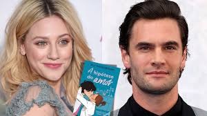

Hipótese do Amor: o sucesso literário que vai ganhar vida nas telas

O fenômeno literário A Hipótese do Amor, da autora Ali Hazelwood, está prestes a conquistar um novo
público. Após dominar as listas de mais vendidos e se tornar um dos romances mais comentados do TikTok,
o livro vai ganhar uma adaptação cinematográfica produzida pela Amazon MGM Studios em parceria com a
MRC. Embora inicialmente se especulasse que a obra se transformaria em uma série, a produção confirmada
será, na verdade, um filme, com estreia prevista para 2026.
Publicado originalmente em 2021 e lançado no Brasil pela Editora Arqueiro, A Hipótese do Amor conquistou
milhões de leitores ao redor do mundo. O livro foi traduzido para mais de 40 idiomas e permaneceu por
meses na lista de best-sellers do The New York Times, além de receber o prêmio de “Melhor Romance do
Ano” pela Amazon. O sucesso não parou por aí: nas redes sociais, especialmente no BookTok, a história
virou um verdadeiro fenômeno, gerando uma enxurrada de vídeos, teorias, fanarts e discussões apaixonadas
sobre os personagens Olive Smith e Adam Carlsen.
A trama acompanha Olive, uma doutoranda em Biologia na Universidade de Stanford que acredita mais em
dados e hipóteses do que em amor. Quando, em um momento de desespero, ela beija o primeiro homem que vê
— o temido e charmoso professor Adam Carlsen —, os dois acabam concordando em fingir um relacionamento
para ajudar Olive a provar à melhor amiga que está “seguindo em frente”. O que começa como uma encenação
acadêmica, no entanto, evolui para um romance real e repleto de química, humor e descobertas pessoais.
O livro nasceu de forma curiosa: Ali Hazelwood revelou que A Hipótese do Amor teve origem como uma
fanfic inspirada no casal Rey e Kylo Ren, de Star Wars. Com o sucesso da publicação, a autora expandiu
seu universo literário e se tornou um dos principais nomes da chamada “romantasy acadêmica”, um
subgênero que mistura humor, ciência e amor de forma leve e inteligente.
Na adaptação cinematográfica, a protagonista Olive Smith será interpretada por Lili Reinhart, conhecida
por seu papel em Riverdale. A atriz também atuará como produtora executiva, o que aumenta as
expectativas de que a adaptação mantenha a essência do livro. Já o papel de Adam Carlsen será vivido por
Tom Bateman, ator britânico conhecido por filmes como Assassinato no Expresso do Oriente e Death on the
Nile. A direção ficará a cargo de Claire Scanlon, com roteiro adaptado por Sarah Rothschild. As
filmagens acontecem em Montreal, no Canadá, e devem ser concluídas ainda neste ano.

A expectativa em torno do filme é enorme, especialmente entre os fãs que transformaram o livro em um dos
maiores fenômenos do romance contemporâneo. Apesar de algumas preocupações comuns entre leitores — como
o medo de que a adaptação “mude demais” o enredo ou a personalidade dos personagens —, o envolvimento
direto de Lili Reinhart na produção e o apoio da autora Ali Hazelwood tranquilizam o público. Além
disso, o estilo cômico e romântico da história, aliado ao cenário acadêmico e às situações de “namoro
falso”, tem tudo para funcionar muito bem nas telas.
Muitos acreditavam que A Hipótese do Amor seria adaptado como uma série, especialmente por causa da
riqueza de detalhes, dos coadjuvantes cativantes e das subtramas relacionadas à pesquisa científica e à
vida universitária. A opção por um longa-metragem, no entanto, mostra a confiança dos estúdios no poder
da história como uma comédia romântica envolvente e de grande apelo popular — algo que vem se destacando
no catálogo de produções do Prime Video nos últimos anos.
No Brasil, o livro encontrou uma base de fãs sólida, especialmente entre jovens leitores e estudantes
universitários que se identificam com as inseguranças e os desafios vividos por Olive. Com a chegada da
adaptação, é esperado um novo aumento nas vendas da obra e um grande impulso nas redes sociais, com
novas gerações descobrindo a história antes mesmo da estreia do filme.
A produção promete unir romance, ciência e humor na medida certa, mantendo a leveza que fez do livro um
marco entre as comédias românticas contemporâneas. Ainda sem data exata de lançamento, A Hipótese do
Amor chega ao cinema (e, posteriormente, ao streaming) como uma das adaptações literárias mais
aguardadas do momento. Para os fãs de histórias apaixonantes, inteligentes e divertidas, o reencontro
com Olive e Adam promete ser tão encantador quanto a primeira leitura — e talvez ainda mais irresistível
nas telas.